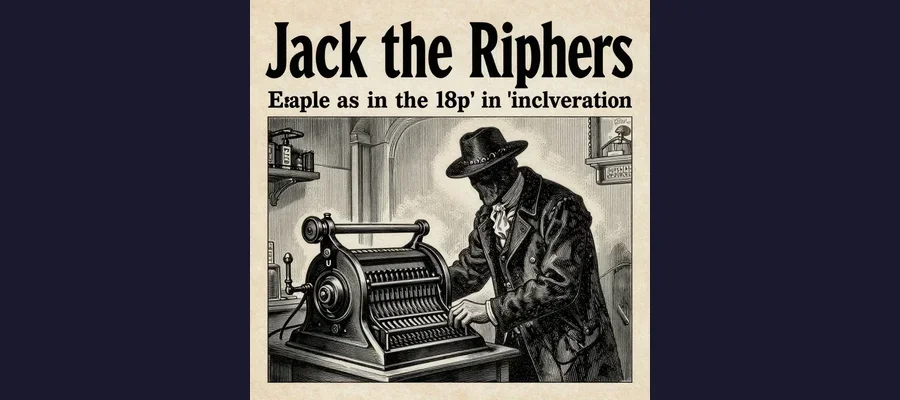

Jack the Ripper: The Victorian Killer Whose Identity Remains a Mystery

The foggy streets of Whitechapel in 1888, where Jack the Ripper stalked his victims.
On the morning of August 31, 1888, a cart driver named Charles Cross walked Buck's Row in London's Whitechapel district and spotted what he thought was a discarded tarpaulin in the street. It was not. It was the body of Mary Ann Nichols, a 43-year-old woman whose throat had been cut so deeply that the wound had nearly severed her head from her neck. Her abdomen had been slashed open with surgical precision. The cart driver had stumbled upon the first confirmed victim of the most notorious serial killer in history — a phantom who would be known forever as Jack the Ripper.
In the weeks that followed, the women of Whitechapel lived in a state of paralyzed terror. The killer struck again and again, always in the dark hours, always in the same labyrinth of narrow alleys and crumbling tenements. And then, as suddenly as the murders began, they stopped. The killer was never caught, never identified, never brought to justice. Over 135 years later, the case remains the most famous unsolved murder mystery in criminal history.
The Whitechapel Nightmare
To understand Jack the Ripper, you must first understand Victorian Whitechapel. In 1888, this East End district was one of the most impoverished and overcrowded areas in the Western world. An estimated 900,000 people lived in London's East End, many in squalid lodging houses where a penny bought a rope to lean against for a night's sleep. Poverty was crushing. Disease was rampant. And for many women without family support, prostitution was the only means of survival.
The streets were dark — gaslight was sparse and unreliable. Fog rolled in from the Thames, turning alleys into corridors of gray blindness. A woman could scream in one street and not be heard in the next. It was, in the words of social reformers of the day, a perfect hunting ground for a predator.
- 🔪 The murders occurred between August 31 and November 9, 1888 — a span of just 71 days
- 👩 Five women are considered the "canonical five" victims: Mary Ann Nichols, Annie Chapman, Elizabeth Stride, Catherine Eddowes, and Mary Jane Kelly
- 📋 The Metropolitan Police received hundreds of letters claiming to be from the killer, but most were hoaxes
- 🕵️ The investigation involved over 2,000 interviews and hundreds of suspects, but no arrest was ever made
- 📰 Newspaper coverage was so extensive that Jack the Ripper became the first globally reported serial killer
The Canonical Five
While the total number of victims attributed to the Ripper varies widely (some researchers suggest as many as 11), there is broad agreement on the "canonical five" who share distinctive patterns of murder:
Mary Ann Nichols (August 31) — Throat cut, abdomen slashed. Found in Buck's Row. Annie Chapman (September 8) — Throat cut, abdomen opened, uterus and bladder removed. Found in the backyard of 29 Hanbury Street. Elizabeth Stride (September 30) — Throat cut but body not mutilated, suggesting the killer was interrupted. Found in Dutfield's Yard. Catherine Eddowes (September 30) — Killed the same night as Stride. Face disfigured, abdomen opened, kidney and uterus removed. Found in Mitre Square. Mary Jane Kelly (November 9) — The most savage attack. Killed indoors in her room at 13 Miller's Court. Her body was virtually dissected.
The escalation from murder to ritualistic mutilation — and the anatomical knowledge it demonstrated — is what set these killings apart from ordinary violence and made them the subject of obsessive fascination.

Newspaper coverage of the Ripper murders was so extensive it created the modern true crime genre.
The Investigation That Failed
The police response to the Whitechapel murders was hampered by the limitations of Victorian forensic science. Fingerprinting was not used by Scotland Yard until 1901. Blood typing wouldn't be discovered until 1900. Crime scene photography was in its infancy. Detectives relied on witness testimony, foot patrols, and door-to-door inquiries — methods that proved woefully inadequate against a killer who struck swiftly and vanished into the fog.
Incompetence or Inevitability?
The investigation was led by Inspector Frederick Abberline of Scotland Yard, an experienced detective who had spent years working undercover in Whitechapel. Abberline was intelligent and dedicated, but he was fighting with one hand tied behind his back. The Metropolitan Police and the City of London Police were rival forces with separate jurisdictions and poor communication — Mitre Square, where Eddowes was killed, was just inside the City police boundary, creating a jurisdictional tangle that hampered the investigation.
The police also faced a hostile public. Whitechapel residents distrusted authority and resented the heavy police presence. Many potential witnesses refused to cooperate, and the dense, transient population made tracking suspects nearly impossible.
The Suspects: A Rogues' Gallery
Over the decades, more than 200 suspects have been proposed, ranging from royalty to butchers to artists. No single suspect has achieved universal acceptance. Here are the most discussed:
Aaron Kosminski
A Polish Jewish barber living in Whitechapel, Kosminski was identified in 2014 by author Russell Edwards through mitochondrial DNA analysis of a shawl allegedly found at the scene of Catherine Eddowes' murder. However, the chain of custody for the shawl is questionable, and the DNA results have been disputed by multiple geneticists. Kosminski was known to the police — he was committed to a lunatic asylum in 1891 — and some senior officers reportedly believed he was the killer.
Montague John Druitt
A barrister and schoolmaster whose body was found floating in the Thames in December 1888, just weeks after the last canonical murder. Druitt's suicide timing and his family's history of mental illness made him a suspect in the eyes of Assistant Commissioner Sir Melville Macnaghten, who named him in an 1894 memorandum. But no direct evidence connected Druitt to the crimes.
Walter Sickert
The renowned painter was accused by crime writer Patricia Cornwell in her 2002 book Portrait of a Killer. Cornwell spent millions purchasing Sickert's paintings and analyzing them for clues, even claiming DNA from his letters matched Ripper letters. Art historians and Ripper scholars overwhelmingly rejected her conclusions, noting that the DNA evidence was circumstantial and the letter attribution unreliable.
Victorian detectives lacked fingerprinting, blood analysis, and DNA tools that would transform policing.
What Modern Forensics Tells Us
In the 21st century, criminal profilers have revisited the Ripper case using techniques that didn't exist in 1888. FBI profiling conducted in the 1980s suggested the killer was a white male aged 28-36, likely employed in a position that allowed him freedom of movement, with knowledge of anatomy — possibly a butcher, surgeon, or mortuary worker. He was probably a local resident familiar with Whitechapel's geography.
Geographic profiling — which analyzes the spatial patterns of crimes to estimate where a serial offender might live — has been applied to the Ripper case. One study placed the killer's most likely residence within a small area of Flower and Dean Street, a notorious slum that was the heart of Whitechapel's criminal underworld.
The case also contributed directly to the development of modern criminology. The failures of the Ripper investigation — the lack of coordination between police forces, the absence of forensic techniques, the mishandling of evidence — drove reforms that shaped 20th-century policing. In that sense, Jack the Ripper's legacy extends far beyond his crimes.
The Enduring Obsession
Why does Jack the Ripper still captivate us after more than a century? Part of it is the void at the center of the story — we have the crimes, the victims, the investigation, but no resolution. The human mind abhors an unsolved puzzle. But there's something deeper at work. The Ripper case sits at the intersection of gender, class, medicine, media, and urban life in a way that makes it endlessly relevant. The victims were women failed by a society that offered them no safety net. The investigation was hampered by class prejudice and institutional rivalry. The media coverage invented the modern true crime genre.
And the fog still hangs over Whitechapel.
Frequently Asked Questions
How many people did Jack the Ripper kill?
The widely accepted number is five — the "canonical five" killed between August 31 and November 9, 1888. However, some researchers argue the Ripper may have been responsible for additional murders before and after this period, with estimates ranging from 4 to 11 total victims.
Why was Jack the Ripper never caught?
Victorian policing lacked modern forensic tools — no fingerprinting, no blood analysis, no DNA testing. Whitechapel's dense population and poor lighting made the area ideal for a predatory killer. Jurisdictional rivalry between the Metropolitan Police and City of London Police also hampered the investigation.
Who is the most likely suspect?
There is no consensus. Over 200 suspects have been proposed. Aaron Kosminski, a Polish barber, has gained attention due to disputed DNA evidence. Montague John Druitt was named by senior police. Walter Sickert was accused by author Patricia Cornwell. Each theory has supporters and detractors, and none has achieved definitive proof.
Why is the case still famous today?
Jack the Ripper was the first serial killer to receive global media coverage, effectively creating the true crime genre. The mystery of his identity, the brutality of the crimes, and the vivid Victorian setting have made it endlessly compelling for researchers, writers, and the public.
📖 Recommended Reading
Want to learn more? Check out Jack the Ripper A to Z by Paul Begg on Amazon for a deeper dive into this fascinating topic. (As an Amazon Associate, we earn from qualifying purchases.)
References & Further Reading
- Wikipedia: Jack the Ripper — Comprehensive overview with extensive victim and suspect details
- Britannica: Jack the Ripper — Biography, victims, and historical context
- History.com: Jack the Ripper — Terror in Victorian London
Editorial note: reconstructions are continuously revised as imaging and inscription studies improve. See our Editorial Policy.